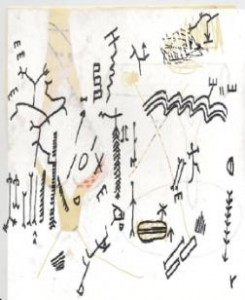

Exposição de Patrícia Caeiro – “Sou a fantasia do Outro”
Fernando Rocha
Exposição de Patrícia Caeiro – “Sou a fantasia do Outro”
A exposição patente na Caldeira 213 da artista plástica Patrícia Caeiro apresenta um conjunto plural de obras que partem de uma fotografia e que posteriormente nos transporta até à vista de uma instalação, duas pinturas e quatro desenhos em volta de uma mesma ideia. Esta multiplicidade de suportes e expressões vão de encontro a um trabalho que representa a complexidade da artista. Complexidade esta, que não se justifica apenas pela diversidade expressiva, mas evidencia a formalização do seu pensamento. Apesar desta aparente confusão expressiva, a obra vale paradoxalmente pela sua coerência e lucidez. Estes trabalhos são certamente, banhados pelo solar, por uma luz que reflecte a sua capacidade inventiva. Há nela o adulto, mas que adulto? (pergunta-se) Talvez o adulto consciente da sua imaturidade, da sua inautenticidade, logo disponível a ter as suas percepções mais joviais, intensas e múltiplas.
Os retornos do mito em forma de legumes e de uma abdução que se entende como sóbria cruzam-se nesta fase. Cartões, materiais pobres, objectos encontrados, podem traçar-lhe um perfil historicamente localizado, mas não a encerram no tempo. Assim nem a crivadíssima referência a outros autores, que contagiam a “sua obra” atenua a inspiração vinda sem depuro das suas idiossincrasias. Porque sempre nascida de um trabalho isolado, a expressão carecia de novidade, não da velha novidade, mas de uma imaginação nas dobras de um livro, entre as micro e as macro percepções. Consta que a casualidade nutre de forma compulsiva e metódica a sua forma de operacionalizar a função autoral.
A fotografia intitulada “In and Out”, enunciação inaugural da exposição e o primeiro confronto com a obra da artista, mostra uma mulher envolta de um ambiente citadino e nebuloso como se tratasse de uma projecção, de uma imagem-sonho. Transporta consigo um pequeno saco de plástico. Parece estar imbuída de uma tarefa. A fotografia sugere no entanto que a figura feminina representada parece não saber muito bem que fazer, como se estivesse perdida, desorientada e à espera de alguém que lhe diga o que fazer. Se a cor na fotografia e a técnica fotográfica nos pode remeter para um tempo actual, já a própria imagem da cidade nos poderia remeter para uma cidade dos anos 60 ou dos princípios do século XX.
A instalação “A lei da natureza” criada com materiais “pobres”, como o cartão, tecidos pouco nobres, e objectos encontrados, procura representar um espaço íntimo, um quarto. Abarca algo que se assemelha a uma cama e diferentes tecidos que delimitam o espaço, como se fossem paredes transparentes. Numa dessas paredes finas e sensíveis, bordado em letras maiúsculas surge a frase “sou a fantasia do Outro”. Vistas do exterior as letras aparecem invertidas, só quem está no interior do quarto é que consegue ler a frase às “direitas”. Como se tratasse de uma porta de entrada, está recortada no tecido uma silhueta masculina gigantesca. Uma pequena escultura no centro do quarto, quase um boneco de marionetas, cuja face, desproporcionada em relação ao corpo, reporta-nos para as fotografias de Cindy Sherman nas quais ela se auto-retratava em diferentes estereótipos femininos. Se aqui a alusão à condição feminina é evidente, Patrícia Caeiro não nos dá a ver pontos de vista ou diferentes perspectivas em volta de uma história. É como se a autora narrasse diferentes histórias que intersectar-se-iam segundo um mesmo tempo ou ideia. Podemos talvez, legitimar esta interpretação através dos desenhos e pinturas que parecem não ter qualquer ligação com os outros trabalhos expostos. Com excepção a uma pintura, com formato 2mX2m, que retrata um homem sem cabeça e numa tarefa associada ao mundo masculino. Alusão não camuflada mas irónica à pintura de Julião Sarmento. Os desenhos e restante pintura parecem não ter qualquer ligação com as demais obras, aqui o gesto e o corpo estão visivelmente presentes contrariando aparentemente a coerência de concepção criativa mais conceptual. Mas se atendermos ao facto que se tratam de obras co-autorais, realizadas inicialmente por mulheres e homens cujos ofícios principais não estão relacionados com a criação pictórica ou outra género de criação artística, podemos paradoxalmente encontrar aqui nestes desenhos a coesão da exposição. Com antecedentes no surrealismo, o processo criativo da autora, baseado nos cadáveres esquisitos, mas cuja diferença essencial é que a co-autoria é articulada com pessoas distantes da criação artística numa tentativa de aproximar a arte e quotidiano, arte/vida. Como uma Máquina-Id com ligação aberta às suas pulsões, Patrícia Caeiro constrói/destrói os desenhos como se tratasse de uma vertiginosa viagem amoral entre estes dois pólos contraditórios. Entre o caos e o cosmos, como se os dois fossem interdependentes, as duas faces da mesma moeda. (O Caosmos de Joyce?)

Não se pretende aqui arriscar uma síntese interpretativa da exposição de Patrícia Caeiro, mas podemos de certa forma, lançar a seguinte provocação: A exposição de Patrícia Caeiro procura parafrasear plasticamente Judith Butler e afirmar que a atitude feminista por excelência seja proclamar abertamente “ Não existo em mim mesma, sou apenas a encarnação da fantasia do Outro”e reunir todas as implicações decorrentes desta declaração numa obra de intensidades diversas.
É uma exposição a visitar pela singularidade dos trabalhos apresentados, a sua multiplicidade criativa, e que vem corroborar o papel de intruso incómodo, mas essencial, que o espaço Caldeira 213 tem desenvolvido. Aqui percebe-se claramente como a liberdade e independência de um espaço “não galeria”, aos fluxos de mercado e à própria história da arte, são essenciais para entendermos os próprios mecanismos sociais da arte e assim oferecerem-nos a possibilidade de constituir uma “história alternativa da arte contemporânea”.
{kind=link}
Fernando Rocha
Exposição patente no dia 3 Janeiro de 2010
Saturday, January 2nd, 2010